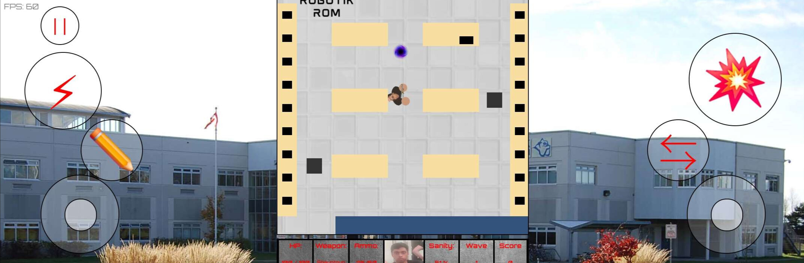
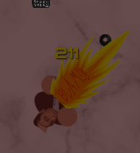

Official Game Manual
I must admit, I used a clanker for this because I was lazy. BUT, I wrote the readme manual myself. I just needed it reformatted in HTML. If you want my original manual, here it is, on the game's GitHub.
It'll run OKAY, a little choppy but still playable.
Pretty consistent 60fps, hopefully.
Each HUD element provides key gameplay info:
On Desktop, use WASD or Arrow Keys to move, Shift to dash, and your mouse to aim. Press Space or Click to attack.
On Mobile, use the Left Joystick to move, the Right Joystick to aim, Dash Button (Electric Sign) to dash, Press Attack Button (Explosion Sign) to attack, Pencil Button to switch to the M. Pencil, and Switch Button to cycle weapons.
Different weapons have unique damage values. Switch weapons using number keys or C for the Mechanical Pencil. Avoid enemy hits and projectiles—once HP hits 0, it’s over.
All stats assume you are in "Derivatives are doable..." difficulty, the normal difficulty, at level 1 with 50% sanity.
Shanvanth's favourite pencil can be used to do calculus on anything, even people! This keeps him sane, so he always keeps the pencil on him. This weapon is a melee weapon that can be used to regain 4 sanity. The attacking speed is fast, but it can only hit a single target at a time. Damage drops off as your sanity increases. Use this when you are really low on sanity!
A beautiful shotgun given to Shanvanth by Joshua. This thing is a calculus-slaying beast! This weapon is a short-ranged, single-shot weapon that uses hitscan to attack. This medium damage weapon is a good all-rounder up close, handling multiple enemies at once with piercing shots. It's versatile, but should not be used beyond close to medium range.
The Shan-inator 72, also known as the Shauniper, is a powerful old rifle designed by Shanvanth himself! This thing is powered by a TI-84 Plus, and can blow off integration problems from a mile away. This weapon is a long-ranged weapon that uses projectiles to attack. This projectile is 100% accurate. This high-damage weapon is excellent for picking off enemies across the map, and has the highest single-shot damage. However, it is very slow with the lowest DPS in the game, and consumes a lot of sanity per shot. It only hits one target. Due to its low ready time, it is a great switch-in weapon for combos and a good utility choice in general.
A heavy, problem-slaying rifle with a dream to crush calculus. Shanvanth's assault rifle is great at shredding defenses. This weapon is a long-ranged weapon that uses projectiles to attack. This low-damage weapon makes up for its pathetic single-shot damage with an extremely fast fire rate, giving it a massive DPS that can shred enemies quickly. However, it has an 8° spread, making it inaccurate at longer ranges. It also chews through sanity fast, making it inefficient as a main weapon. It only hits one target. It also has the slowest ready time in the game. For these reasons, it’s best used as a medium-ranged destroyer for tanky enemies.
All stats assume you are in "Derivatives are doable..." difficulty, the normal difficulty, at level 1 with 50% sanity.
Me! Dominic chases Shanvanth around relentlessly, harassing him and never letting him get away with his vicious speed. Dominic is fast and spawns very often, dealing low melee damage, but has relatively low health and can be killed easily with all weapons. He can easily swarm you, so get rid of them as fast as you can!
Cheng Feng seeks to remind Shanvanth of his failures by hurling burnt tires at him. Cheng Feng is very fast and spawns often, usually supporting enemies in front of him. He deals moderate ranged damage and can attack up close as well. It's best not to leave him at medium range — pick him off either up close or from far away. He has very low health, making him a perfect victim for the M. Pencil.
Zuk wants to slam down on Shanvanth and tell him to shut up about calculus by any means necessary. Zuk is a slow enemy that spawns sometimes, usually approaching slowly to pressure Shanvanth until he falls. He has lots of health, capable of eating shotgun blasts as waves progress, and deals moderate melee damage. Keep your distance and don’t let him get too close. Use combos to eliminate him quickly.
~~redacted information~~